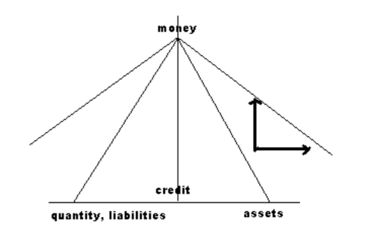

Economics of Money and Banking - Week 1
Course Link: https://www.coursera.org/learn/money-banking/
Week 1
What is a Bank, a Shadow Bank, a Central Bank?
Banks
| Assets (Liquidity) | Liabilities (Solvency) |
|---|---|
| Loans | Deposit accounts |
| Securities | Other borrowing |
| Cash Reserves | Net worth |
Shadow Banks
| Liquidity | Solvency |
|---|---|
| RMBS (Residential Mortgage Backed Securities) | Money Market Borrowing |
| IRS (Interest Rate Swaps) | - RP (Repurchase Agreement) |
| CDS (Credit Default Swaps) | - ED (Eurodollars) |
| - ABCP (Asset-Backed Commercial Paper) |
The Four Prices of Money
- Par, today
- Interest rate, future
- Exchange rate, foreign
- Price level, commodities
“All banking is a swap of IOUs”
Hierarchy of Financial Instruments
- Ultimate money: gold
- National currency: promise to pay gold
- Bank deposits: promise to pay currency on demand
- Securities (credit): promise to pay currency in the future
- From bank’s perspective, deposits and securities are credit.
- From consumer’s perspective, only securities are credit.
- From international monitory’s perceptive, currency, deposits and securities are credit.
Hierarchy of Financial Institutions
- Outside money: gold
- Inside money is some form of credit
Central Bank
| Liquidity | Solvency |
|---|---|
| Gold | Currency |
Banking System
| Liquidity | Solvency |
|---|---|
| Currency | Deposits |
Private Sectors
| Liquidity | Solvency |
|---|---|
| Deposits | Securites |
| Securities |
Dynamics of the Hierarchy

- Horizontal axis represents quantity
- Vericle axis represents quality
- In a economic boom, credit expands and qualitative difference becomes less as the hierachy flattens; it contracts in economic slowdown.
Discipline and Elasticity, Currency Principle and Banking Principle
- Scarcity of (ultimate) money; discipline
- Elasticity of (derivitive) credit
History of Market Makers
- Security dealers: interest rate
- Banking system: par
- Central bank: exchange rate
Managing the Hierarchy
- Central bank: lender of last resort
- What do central banks do?
- Exchange rate
- Par
本作品采用知识共享署名-非商业性使用 3.0 版本许可协议进行许可，欢迎转载，演绎，但是必须保留本文的署名 zellux（包含链接），且不得用于商业目的。